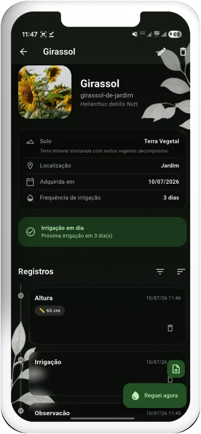
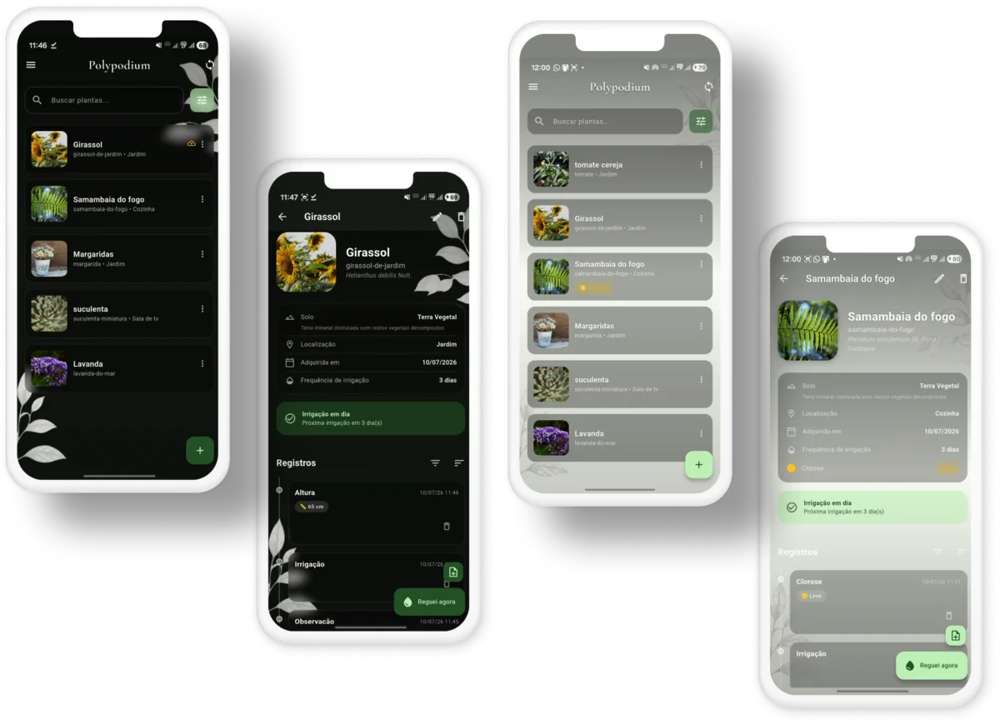

The plant care app for your houseplants and vegetable garden
Polypodium vulgare L.
Watering and fertilizing reminders, a photo journal for every plant, species care sheets and harvest tracking. Everything works offline, on your device, and syncing with your own server is optional.

Everything your plant collection needs
Succulents, ferns, orchids, vegetables or fruit trees: log every bit of care and let the app remind you of the next one.
Watering and fertilizing reminders
Set how often each plant needs water and get notified on the right day. Fertilizing, pruning and check-up reminders too.
Care agenda
What is overdue, what is due today and what is coming this week, on one screen. On Android, a home screen widget shows today's tasks.
Photo journal
Watering, pruning, fertilizing, repotting and notes on a timeline, with several photos per entry, before-and-after comparison and a growth chart.
Care sheets and Flora Brasil
Light, humidity, toxicity and blooming season for each species, with autocomplete of common and scientific names from the built-in Flora Brasil database.
Vegetable garden and harvests
Log harvests with quantities and pesticide applications. The app warns you while a plant is still within its pre-harvest interval.
QR code labels
Print labels for pots and garden beds. Point the camera at a label and the plant's page opens right away.
Soils, locations and cuttings
A soil catalog with photos, GPS locations and cuttings linked to their parent plant, so you know where each plant came from and where it lives.
Shared garden
Sync between phone and computer and share the garden with your family, using a server you host. No third-party cloud.
Private and offline
No account, no ads and no data collection. Export a full backup, photos included, as a .zip file whenever you want.
Inside the app
Plant list, plant page and care journal, in light and dark themes.

Download for free
Android, Windows and Linux. No account, no ads, no data collection.
Frequently asked questions
What people usually ask before installing.
Is Polypodium free?
Yes. The app is free, has no ads or in-app purchases, and the source code is open under the MIT license.
Does the app work without internet?
Yes. Polypodium is offline-first: plants, entries, photos and reminders stay on your device and work without a connection. The internet is only used if you turn on sync with a server.
Do I need an account?
No. Install it and start adding your plants. An account is only needed on the sync server, which is optional and hosted by you.
How do watering reminders work?
You set how often each plant needs water and what time you want to be notified. The app sends a notification on the right day, grouping the plants that need watering. There are also fertilizing, pruning and check-up reminders, plus an Agenda with everything overdue, due today and due this week.
Does it work for vegetable gardens and orchards?
Yes. Log harvests with quantities, record pesticide applications, and the app warns you about the pre-harvest interval before your next harvest.
Does Polypodium identify plants from photos?
No. The app focuses on tracking and care. To set a plant's species there is an offline autocomplete with common and scientific names from the Flora Brasil database.
Can I share my garden with family?
Yes. With your own server (installed with Docker), several people can sync the same garden across phones and computers.
Where is my data stored?
On your device, or on the server you host yourself. Polypodium collects no data and lets you export a full backup, photos included, as a .zip file. See the privacy policy.
Your server, your rules
Polypodium doesn't depend on a third-party cloud: if you want to sync between devices or share the garden with other people, you can spin up your own server with Docker in minutes. Without a server, the app is still complete, just local.